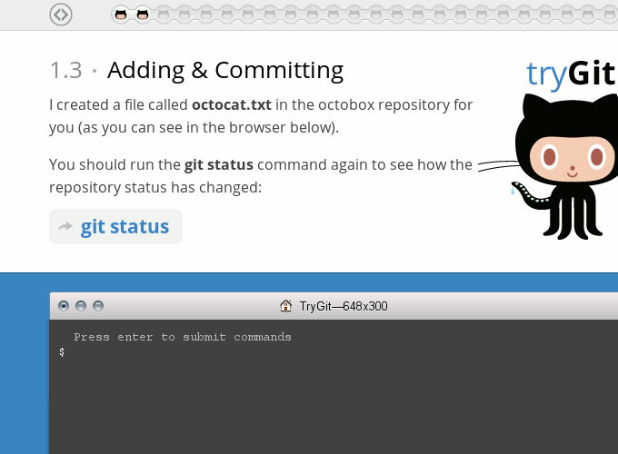
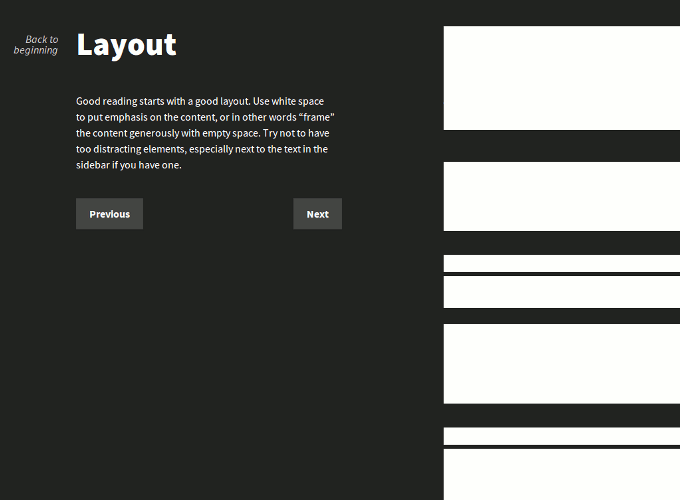
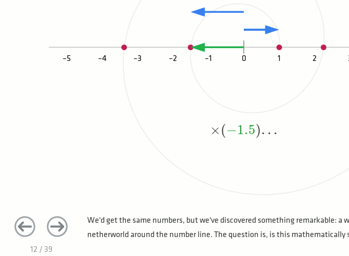

As I recently stumbled upon some greatly designed articles and sites—not alone thanks to Sidebar—I wanted to share some of my findings. The following examples show how interaction design on a website can contribute to the user experience by involving the user in an entertaining and joyful way.
Most of the examples are—not by chance—educational. To me, they proof that a student’s active engagement results in more effective learning, and that interactivity stimulates the will to learn and explore.
Hover States
hoverstates.gif
Hover States is a showcase for interaction design on the web, curated by London-based agency Chambers Judd. If you are on the lookout for some inspiration, give this site a try, it’s worth it. But beware, it is easy to get lost in exploring all those sites!
Try Git
The Codeschool-created web application Try Git is a basic course on how to use Git. By simulating a terminal and file explorer, letting the user type all commands by himself and creating a real (like, super-real) Github repository, learning Git is simple and fun with this course.
Interactive Guide to Blog Typography
I have become a fan of the work of Tommi Kaikkonen. Not because the work he does would be rocket-science, fancy interaction design, but because his posts and examples are well thought-out and greatly serve their purpose.
His Interactive Guide to Blog Typography is so simple, yet awesome. It educates the reader on the very basics of typography, while entertaining in a very subtle way.
How to Fold a Julia Fractal
Steven Wittens’ article How to Fold a Julia Fractal makes math fun. No text book I have seen so far explains complex numbers that visually rich—and of course, the interactivity provided by the web cannot be beaten by text books either. Somebody put a lot of work into this!
Kern Type, Shape Type & Color

Method of Action is a learning platform still in development. However, as part of their first course, Design for Analytical Minds, three games were released upfront: Kern Type, Shape Type and Color. They train your eyes to recognize good kerning, harmonical letter shapes and subtle color differences, respectively. My maximum score at Kern Type is 92%, but I bet you can do better! :)
More examples
So, what do you think? Where have you experienced great interaction design on our beloved www? Feel free to tell me on Twitter!